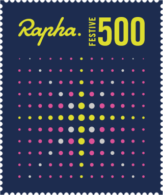

Un viaje de 4 días la hacia la reflexión y hacia uno mismo, en una aventura por las rutas del campo intransitadas, aisladas por los cristales de hielo, el frío de invierno y el gris de las mañanas
Una ruta por el sur de Francia, Suiza y Alemania para pensar y meditar. ¿Pero por qué lo hacemos? ¿Por qué tantos kilómetros que recorrer? Quizás es para darnos cuenta de que somos capaces de realizar cualquier cosa si es que nos lo proponemos, o para simplemente hacernos recordar de que no son las ruedas de una bicicleta que gira por el mundo, si no que somos nosotros, que con cada impulso y tracción que hacemos al pedalear, los responsables de que el mundo se mueva.
